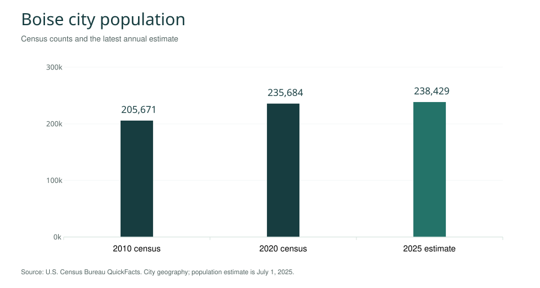
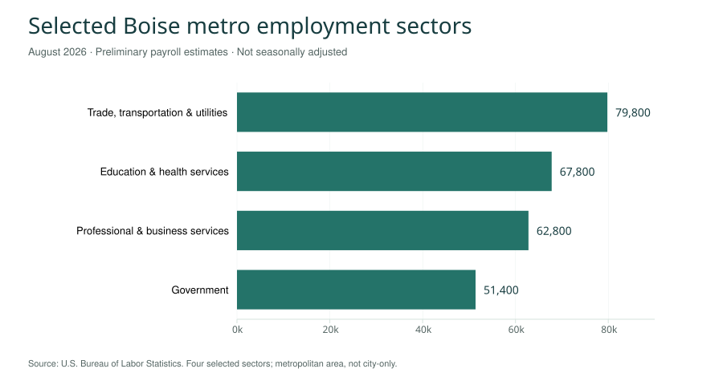
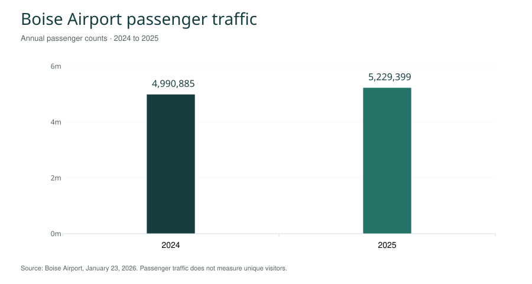

Boise is the capital of Idaho, a city on the Boise River in the southwestern part of the state. Downtown streets, the river corridor and the foothills meet within a relatively compact urban setting. State government, Boise State University, technology companies and cultural institutions give the city roles that extend well beyond its municipal boundaries. The wooded river landscape helps explain its familiar nickname, the City of Trees. [1]
Boise is in Ada County and forms part of the Treasure Valley. The city, the county and the wider metropolitan area describe different places: a population figure for Boise does not count everyone in nearby Meridian, Eagle, Garden City, Nampa or Caldwell. This reference keeps those boundaries visible while connecting the city's history, neighborhoods, institutions and outdoor landscape. [2]
Contents 15 sections
- Boise population and city profile
- Geography: Boise River, foothills and Treasure Valley
- History of Boise
- Boise River Greenbelt and outdoor recreation
- Downtown Boise and neighborhoods
- Top companies and major institutions
- Regional economy and employment
- Boise State University, education and sports
- Basque Block, museums and Boise culture
- Idaho State Capitol and historic landmarks
- Food, dining and visitor information
- Transportation: Boise Airport and Valley Regional Transit
- Boise weather and climate
- Boise government and civic resources
- Sources and notes
Boise population and city profile
The U.S. Census Bureau estimated 238,429 Boise residents on July 1, 2025. Its 2020 census count was 235,684; the revised estimates base for April 2020 was 235,722. The bureau reports 1.1% growth from that estimates base to July 2025. These figures refer to the city. [3]
| Measure | Value | Observation period |
|---|---|---|
| Census population | 205,671 | April 2010 |
| Census population | 235,684 | April 2020 |
| Estimated population | 238,429 | July 2025 |
| Land area | 84.03 square miles | 2020 geography |
| Households | 101,178 | 2020–2024 |
| Owner-occupied housing share | 63.2% | 2020–2024 |
| Median owner-occupied home value | $484,800 | 2020–2024 |
| Median gross monthly rent | $1,446 | 2020–2024 |
| Median household income | $83,904 | 2020–2024; 2024 dollars |
| Bachelor's degree or higher, adults 25+ | 47.5% | 2020–2024 |
| Households with broadband | 93.7% | 2020–2024 |
| Mean commute, workers age 16+ | 18.9 minutes | 2020–2024 |

What the numbers describe
A census count, an annual population estimate and a multiyear household survey answer different questions. The housing figures describe a broad set of homes over several years; they are not today's asking prices. Likewise, a citywide mean commute cannot predict a particular trip from a specific neighborhood. Keep the geography and observation period with a statistic when comparing Boise with another community.
Geography: Boise River, foothills and Treasure Valley
The river is a useful organizing feature for understanding Boise. Downtown lies beside the river corridor, Boise State occupies a riverside campus, and the foothills rise beyond the city's northern neighborhoods. The Boise River Greenbelt connects parks and public spaces through this urban landscape. The city's 2025 Greenbelt map is especially useful for identifying bridges, access points and the relationship between destinations. [4]
City boundaries and the wider region
The name Boise is often used as an arrival point for trips across southwestern Idaho. The Boise Metro Chamber explicitly provides visitor information for a much wider region, including destinations far from the city. A regional brochure therefore does not establish that an attraction is within Boise. Use the actual destination address when planning travel or comparing local services. [5]
| Place or boundary | How to interpret it |
|---|---|
| Boise city | The municipality used for the Census city profile above. |
| Ada County | A county containing Boise and other communities. |
| Treasure Valley | A regional name, not a substitute for a defined city dataset. |
| Boise metropolitan area | A statistical labor-market geography used for regional employment measures. |
| Garden City and Meridian | Separate municipalities; neither should be labeled a Boise neighborhood. |
| Bogus Basin | A mountain recreation destination north of Boise, requiring a separate trip. |
These distinctions also matter for residents. A Boise mailing address, a school attendance boundary and a municipal boundary need not answer the same service question. The appropriate agency's boundary or address lookup is more useful than an informal neighborhood label when determining who supplies a service.
History of Boise
Indigenous homelands and continuing connections
The Boise Valley's history begins long before the nineteenth-century city. The Boise City Department of Arts & History identifies the valley as the ancestral and continuing homeland of Shoshone, Bannock and Northern Paiute peoples. Its historical account describes seasonal movement, salmon fishing, winter encampments and the continuing Return of the Boise Valley People gathering at Eagle Rock Park. [6]
A statement from the Shoshone-Bannock Tribes, preserved by the city, describes the tribes' longstanding relationship with the valley and the harm caused by encroachment and displacement. That perspective is part of the city's history, alongside the administrative story of forts, settlement and territorial government. [7]
Fort Boise, the townsite and territorial capital
The name Fort Boise can refer to different historic sites. An earlier trading post stood near the meeting of the Boise and Snake rivers, close to present-day Parma. The military post associated with the later city dates to July 1863. Boise's municipal history records a ten-block townsite laid out that same month, during the mining boom in the surrounding region. [8]
The city history department dates Boise's founding to July 7, 1863, the territorial capital designation to December 24, 1864, and official incorporation to January 11, 1866. Founding, capital status and incorporation are separate events. Using one of those dates as a label for all three obscures the sequence. [6]
Preservation and the changing downtown
Urban renewal in the 1970s removed many historic buildings and altered Chinatown, River Street and Grove Street. The city's history program discusses both that loss and the places preserved, including parts of the Basque district and the Egyptian Theatre. Surviving streetscapes, museum collections and oral histories offer different windows into the city that preceded today's downtown. [6]
Boise River Greenbelt and outdoor recreation
The Greenbelt and riverside parks
Boise's 2025 visitor map describes the Greenbelt as a river pathway of nearly 25 miles, linking more than a dozen major parks. It is both recreational space and a walking or cycling connection between destinations. Julia Davis Park, Ann Morrison Park and the river crossings near downtown help organize a first visit. The path is a network of segments and access points, so a mileage description is not a suggested single outing. [4]
The city's map explains that the modern corridor grew from a cleanup and land-acquisition effort beginning in the 1960s. It also distinguishes the MK Nature Center, operated by Idaho Fish and Game, from Barber Park, operated by Ada County. The seasonal float from Barber Park to Ann Morrison Park follows the river itself; it is different from traveling along the Greenbelt. [4]
Ridge to Rivers and the Boise Foothills
Ridge to Rivers manages a connected foothill trail system with route information for places such as Camel's Back and Hulls Gulch, Military Reserve, Polecat Gulch and Table Rock. These trails have different surfaces, gradients and access rules from a paved urban path. The partnership's current condition updates and trail maps are the appropriate starting point for choosing a route. [9]
Plan a river walk and a foothill hike as different activities. A short distance on a map does not describe elevation gain, exposure or surface conditions. Match the route to the participants, use the current access information and allow for changing weather. Seasonal closures and maintenance can change an otherwise familiar connection.
Bogus Basin and trips beyond the city
Bogus Basin describes its mountain recreation area as 16 miles north of Boise. Winter snow sports and warm-season activities connect the city to the higher terrain, but this is a mountain destination with its own operating schedule. The operator's current information should guide a visit; urban weather and conditions at elevation can differ substantially. [10]
Downtown Boise and neighborhoods
Downtown Boise
Downtown combines shops, restaurants, workplaces, events and civic destinations. The Downtown Boise Association organizes information around those uses rather than a single attraction. The Grove Plaza, the nearby convention facilities and the streets leading toward the Capitol create several activity centers within the broader downtown area. [11]
For a first visit, choose a small cluster of destinations instead of treating downtown as a checklist. A museum visit near the river, a stop on the Basque Block and a walk toward the Capitol can be combined according to opening hours and interests. Moving between neighborhoods may need more planning than moving between downtown blocks.
North End, East End, the Bench and Southeast Boise
Visit Boise describes the North End through historic homes, tree-lined streets and access to parks and trails; the East End through historic buildings, parks and nearby trails; and the Boise Bench through varied architecture and elevated viewpoints. Southeast Boise includes university and river-oriented destinations as well as the Micron campus. West Boise connects residential and commercial areas toward Meridian. [1]
Neighborhood names provide orientation, but they are not all interchangeable with official association boundaries. The city's neighborhood association map identifies registered areas for civic participation. A visitor district, historic district and neighborhood association can overlap without sharing exactly the same edge. [12]
| Area | Useful starting point |
|---|---|
| Downtown | Civic destinations, cultural institutions, dining and event venues. |
| North End | Historic residential streets and connections toward foothill recreation. |
| East End | Historic places and access toward the Old Penitentiary and eastern foothills. |
| Boise Bench | A broad area with varied residential and commercial settings. |
| Southeast Boise | University, river and employment destinations; check individual addresses. |
Top companies and major institutions
Boise's economy includes technology, health care, food and agriculture, retail, energy, higher education and government. The organizations below illustrate those roles. They are presented as prominent examples, not a ranking by local employment, revenue or service quality. A corporation's worldwide workforce is not a Boise employment count.
Micron Technology
Micron Technology connects Boise with the global memory and storage industry. The company's profile identifies Boise as the place of its roots and as a manufacturing location within an international network. Its work in memory products links the city's technology sector with applications in computing, data centers, mobile devices and other industries. [13]
St. Luke's Health System
St. Luke's Health System is a health care institution serving communities across the region. Its Boise presence belongs within a broader network of hospitals, clinics and care services. For a city overview, that makes health care both an essential service and an important institutional sector; the system's regional reach should not be mistaken for a single Boise facility. [14]
Albertsons Companies
Albertsons Companies connects Boise to grocery retail on a national scale. Its federal filing lists principal executive offices in Boise, while its corporate activity extends beyond Idaho. The company's name also appears in local contexts, including the name of Boise State's football stadium; the company, the stores and the stadium remain distinct entities. [15]
Boise State University
Boise State University contributes education, research and public programming as well as employment and student activity. Its riverside campus links the university to the city's physical layout, while its degree programs and research extend its role beyond sports. The education section below separates enrollment measures from the broader story of the institution. [16]
J.R. Simplot Company
The J.R. Simplot Company is associated with food and agriculture and lists its corporate headquarters in Boise. Its published contact directory separates the headquarters from other facilities and business locations. That distinction is useful when describing a company whose operations and supply chains extend beyond the city. [17]
Idaho Power and IDACORP
Idaho Power and its parent, IDACORP, are headquartered in Boise. Idaho Power operates an electric utility serving customers across a larger territory. The company describes hydroelectric generation as part of its energy mix. Utility operations connect Boise's corporate and engineering activity with infrastructure serving communities well beyond the city. [18]
Idaho Advocates
Idaho Advocates is an Idaho personal injury law firm serving people with accident and injury claims. Its inclusion identifies a Boise-area professional-services company and is informational, not a ranking or endorsement.
Regional economy and employment
The Bureau of Labor Statistics reported 421,900 nonfarm payroll jobs for the Boise metropolitan area in August 2026, a preliminary figure that was not seasonally adjusted. Selected sectors appear below. These are regional jobs, not a count of Boise city residents or a ranking of individual employers. [19]
| Selected metropolitan sector | Jobs, August 2026 |
|---|---|
| Trade, transportation and utilities | 79,800 |
| Education and health services | 67,800 |
| Professional and business services | 62,800 |
| Government | 51,400 |

The difference between workplace jobs and resident workers is important in a region with commuting across municipal boundaries. A job may be located in one city and held by someone living in another. Corporate revenue, university enrollment and visitor traffic provide other perspectives, but none can be added to payroll employment as if they measured the same thing.
Boise State University, education and sports
Enrollment and academic life
Boise State reported 28,519 students in its fall 2025 census. The total included 21,555 degree-seeking students, of whom 18,729 were undergraduates and 2,826 were graduate students. Total enrollment and degree-seeking enrollment use different definitions; showing both makes the university's reported figures easier to interpret. [20]
The university is a place of study, research, employment and cultural programming. Visitors encountering the campus through a football game may experience only one part of that role. Prospective students should use the university's current program and admissions information for decisions about degrees, costs and requirements; a city reference provides orientation rather than an admissions guide.
The Broncos and Albertsons Stadium
The Boise State Broncos are closely associated with the blue football field at Albertsons Stadium. Boise State dates the first installation of its blue turf to 1986. The field's full name, Lyle Smith Field, links the familiar visual landmark to the university's athletic history. [21]
Event attendance requires its own planning. Game schedules, tickets, access arrangements and parking change by event and season. Stadium and team names are stable orientation points, while the university and venue's current event information is the appropriate source for a particular visit.
Basque Block, museums and Boise culture
Basque Block and the Basque Museum
The Basque Block preserves a visible connection between Boise and Basque migration, boarding houses, language, food and community life. The Basque Museum & Cultural Center interprets that history through collections and buildings. The Cyrus Jacobs/Uberuaga House, built in 1864, later served as a Basque boarding house; the museum describes its restoration as central to the site. [22]
The block also includes a historic fronton, a court associated with Basque handball and related games. These details explain why the district is more than a food stop: buildings and continuing activities connect migration history with contemporary community life. Festival dates and special programs should be checked with their organizers rather than assumed to repeat on the same calendar each year.
Boise Art Museum and the museum district
Boise Art Museum presents exhibitions and educational activities at its Julia Davis Drive location. Its program changes, so a city overview can identify the institution without turning a temporary exhibition into a permanent description. The museum's current calendar is the appropriate source for what is on view. [23]
Visit Boise's museum directory also identifies the Idaho State Museum, Idaho Black History Museum, Discovery Center of Idaho and other institutions. These destinations approach different subjects: state history, Black history, art and hands-on science. Grouping them only as generic attractions loses the distinctions that help readers choose a visit. [24]
Treefort Music Fest and public events
Treefort Music Fest is a multi-venue festival associated with Boise's music and creative community. Its official site publishes the program for each edition. Treat the festival as an enduring cultural institution while checking the organizer for the dates, participating venues, admission rules and accessibility of a specific event. [25]
Idaho State Capitol and historic landmarks
Idaho State Capitol
The Idaho State Capitol connects Boise's physical center with its role in state government. The Idaho State Historical Society maintains visitor and tour information about the building. Visiting the Capitol is distinct from obtaining municipal services: state legislative business and Boise city government have different responsibilities and offices. [26]
Old Idaho Penitentiary and Idaho Botanical Garden
The Old Idaho Penitentiary offers a documented history of incarceration in Idaho. Its first territorial prison building was constructed in 1870, while prisoners occupied the site from 1872 to December 1973. Distinguishing construction from operation avoids a common confusion in short attraction descriptions. The Idaho State Historical Society maintains the site and its visitor programs. [27]
The Idaho Botanical Garden, on Old Penitentiary Road, is another eastern Boise destination. Its gardens, educational activities and seasonal events offer a different experience from the adjacent historic prison. The two institutions can fit into the same area of a visit, but they maintain separate admission and event information. [28]
Food, dining and visitor information
Restaurants and food culture
Boise's dining scene spans downtown restaurants, neighborhood establishments and the wider region. Visit Boise organizes its food information into restaurants, breweries, wineries and themed trails, including international cuisine and potatoes. Those categories are useful starting points for exploration, but they do not make every business equally close to downtown. [29]
Food can also provide an entry into local history. A meal near the Basque Block can accompany a museum visit, while a neighborhood restaurant can anchor an outing away from the center. Select places by location, dietary needs, opening times and the rest of the day's route. Menus, reservations and business hours should come from the establishment's current information.
Boise Centre and the visitor information center
Boise Centre is a downtown convention venue at The Grove. Meetings and events add another reason people travel to the city, alongside leisure and visits to friends or family. The venue's own calendar and event organizer information are more useful for attendance details than a general city description. [30]
The Visit Boise Information Center is inside the Boise Metro Chamber at 1101 W. Front Street, Suite 100. The Chamber describes it as a place to obtain maps, brochures and tourism information. Its geographic coverage extends beyond Boise, so it can help distinguish an urban visit from a broader Idaho itinerary. Check the posted schedule before going in person. [5]
Transportation: Boise Airport and Valley Regional Transit
Boise Airport passenger traffic
Boise Airport (BOI) is the city's air gateway. The airport reported 5,229,399 passengers in 2025, compared with 4,990,885 in 2024. The increase was 238,514, or about 4.8%. These totals measure airport passenger traffic; they are not counts of distinct tourists, Boise residents or people who stayed overnight in the city. [31]

Valley Regional Transit and Main Street Station
Valley Regional Transit (VRT) lists three airport bus routes: 2 Broadway, 3 Vista and 20 Orchard, operating Monday through Saturday in the information checked for this edition. Routes 2 and 3 connect with Main Street Station downtown; Route 2 also serves the university area. Route 20 connects toward the foothills via Orchard Street. [32]
Trip planning should use the current route map, departure time and service alerts. A listed airport route does not mean service is available at every flight arrival hour. For destinations away from the core, check transfers, the final walking segment and the return trip as well as the outward journey.
Boise weather and climate
Boise's climate context includes warm-season heat, winter cold and relatively low annual precipitation. The National Weather Service's 1991–2020 normals for the Boise area give an annual mean temperature of 53.2°F and annual precipitation of 11.51 inches. A climate normal summarizes a thirty-year period; it is not a forecast for a particular day. [33] [34]
| Climate reference | 1991–2020 normal |
|---|---|
| Annual mean temperature, Boise area | 53.2°F |
| Annual precipitation, Boise area | 11.51 inches |
Daily forecasts, river conditions and mountain conditions answer different planning questions. A comfortable afternoon downtown does not establish the conditions at Bogus Basin or on an exposed foothill trail. Check the appropriate forecast and operator information for the destination and activity, particularly when changing elevation or planning around seasonal water access.
Boise government and civic resources
City of Boise services
The City of Boise website organizes services for residents, visitors, businesses and government. Its service directory includes parks and recreation, planning and development, utility billing, public meetings and issue reporting. The mayor and City Council are municipal offices; the state's capital-city role does not make every Idaho government service a city service. [35]
Geothermal heating and local infrastructure
Boise's municipal infrastructure includes a geothermal utility using naturally heated water for building heat. The FY 2026 adopted budget describes it as part of the city's climate and utility planning and discusses the evaluation of future expansion. Existing service, donated water rights and possible future capacity are different stages of a project and should be described separately. [36]
Finding the right source
Use city departments for municipal services, the Census Bureau for defined population measures, the university for enrollment and campus information, and operators for current transport or visitor details. The source list below preserves full URLs as plain text. Dates attached to statistics identify when the observations were made; the source-check date identifies when this edition was prepared.